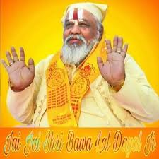

Lord Rama
Lord Rama is the devotist person.His Character is so good that even he kills Ravana but he lasts say sorry for all his doings.
By This their character clearly shows
He married Lord Sita.The Lord of the green world.Even Ravana traps Mata Sita into his devil's cave but he knows that Lord Rama will come definitely.
